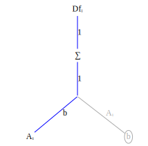
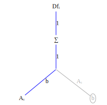

Let's do several examples first, before going into the details of why this works. The first example is: compute $\frac{\partial f_i}{\partial A_{mn}}$ for $f_i = A_{ij}b_j$.
First create the function graph corresponding to the expression $f_i = A_{ij}b_j$

Now transform to a derivative graph, where $Df_{imn}$ refers to the derivative $\frac{\partial f_i}{\partial A_{mn}}$ indexed at $imn$,
 

In the graph on the right we've grayed out edges and nodes which don't contribute to $\frac{\partial f_i}{\partial A_{mn}}$.
Now locate the graph variable corresponding to the variable being differentiated with respect to. This is the node labeled $A_{ij}$.
Create a substitution rule to replace the $i,j$ indices in $A_{ij}$ with $m,n$: $sub((i=m,j=n))$. Apply the substitution to the graph nodes and edges on the product path from $f_i$ to $A_{ij}$, beginning with $A_{ij}$ and working upward:


Notice that the substition $sub((i=m,j=n),\sum\limits{j})$ collapses to a no-op. This is because the summation is zero except when $j=n$; there is only one term in the summation.

In the final substitution change you will notice that the first index of $Df$ is an equality constraint caused by the substition rule $sub((i=m,j=n),...)$. All terms $Df_{i,m,n}$ with $i \ne m$ are identically 0.
Now multiply all the terms on the product path from node $Df_{i=m,mn}$ to node $A_{mn}$. This product is $Df_{i=m,mmn} = 1*1*b_n = b_n$.
Although the derivative has three indices $i,m,n$ the only non-zero elements of this tensor are the elements of $b_n$. Storing the tensor derivative takes space proportional to the size of $b_n$. This reduction in storage happens frequently when taking tensor derivatives.
Let's test the symbolic index result we've just computed by writing a FastDifferentiation function to compute the derivative symbolically:
function Ab()
A = make_variables(:A, 2, 2)
b = make_variables(:b, 2)
jac = jacobian(FD.Node.(A * b), vec(A))
reshape(jac, 2, 2, 2)
end
export Aband here's the evaluation:
julia> Ab()
2×2×2 Array{FastDifferentiation.Node, 3}:
[:, :, 1] =
b1 0.0
0.0 b1
[:, :, 2] =
b2 0.0
0.0 b2As expected the derivative is non-zero only when the first two indices are equal.